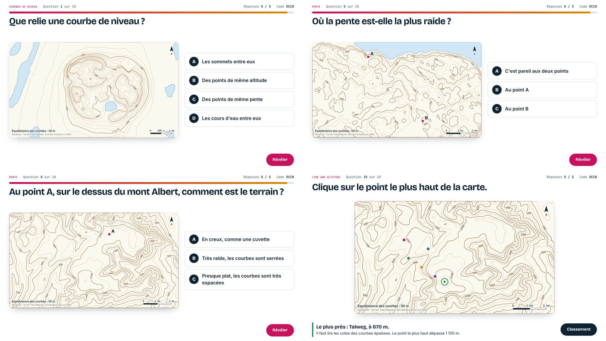
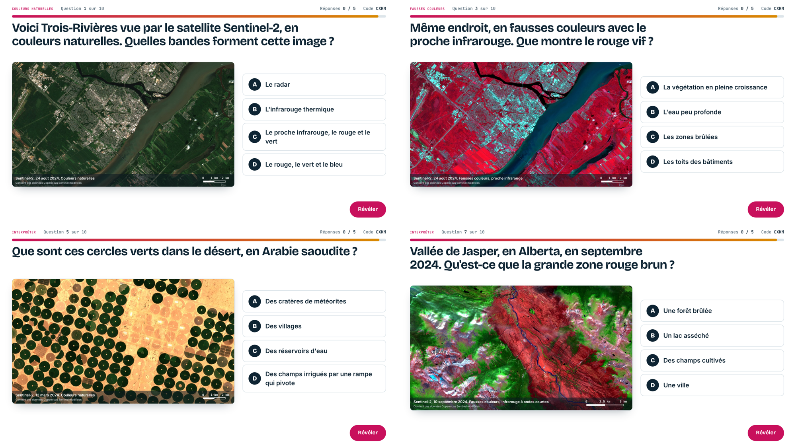
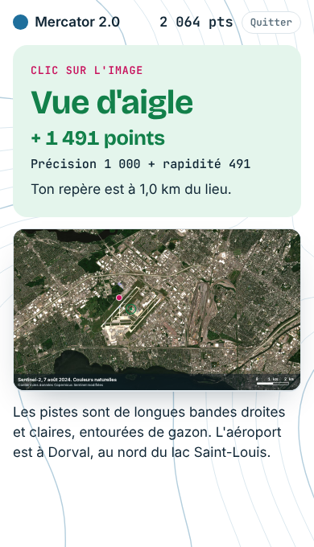
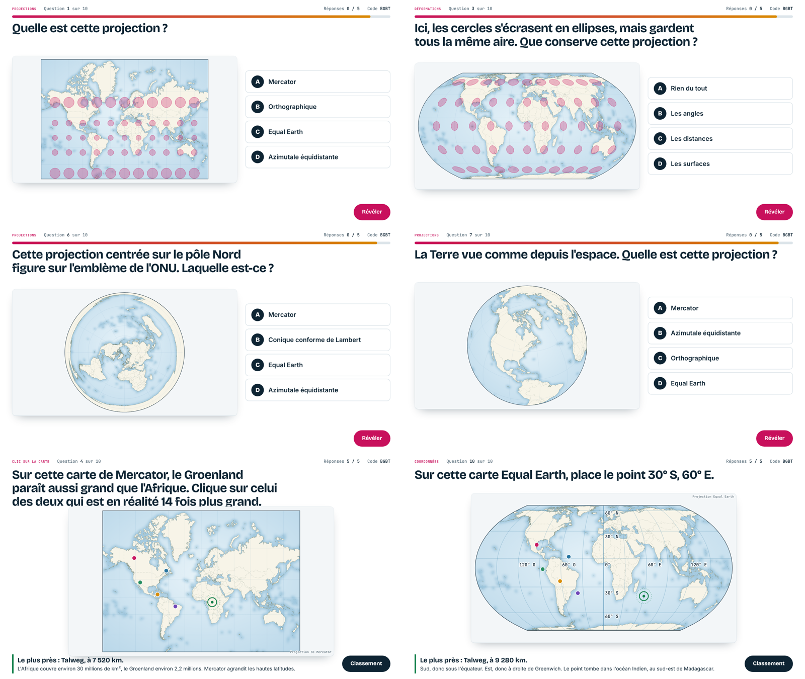
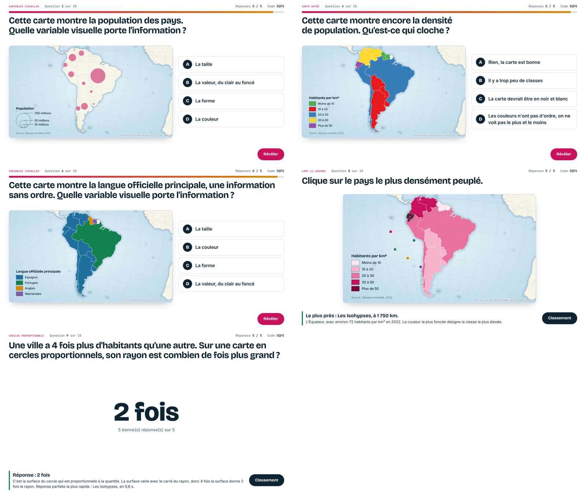
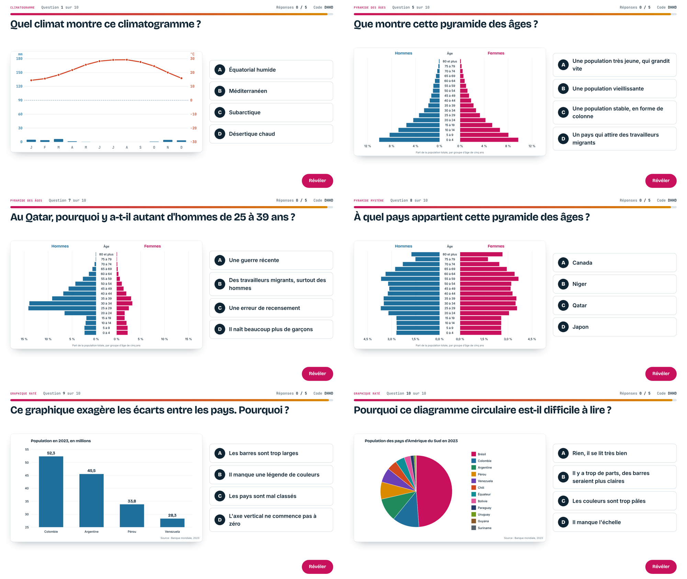
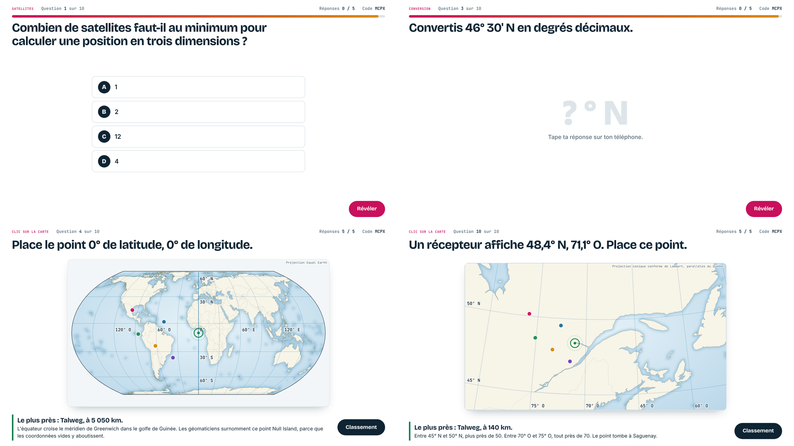
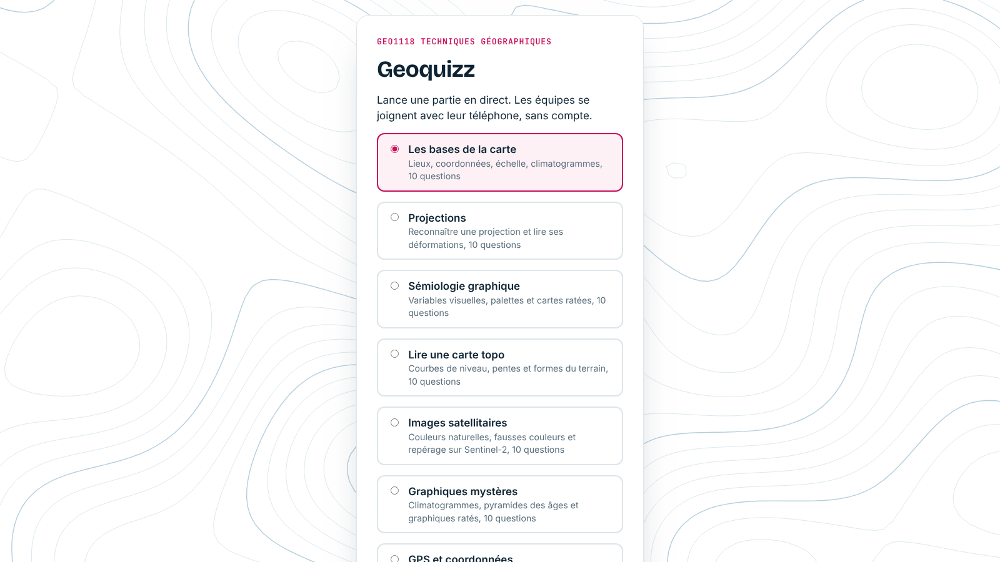
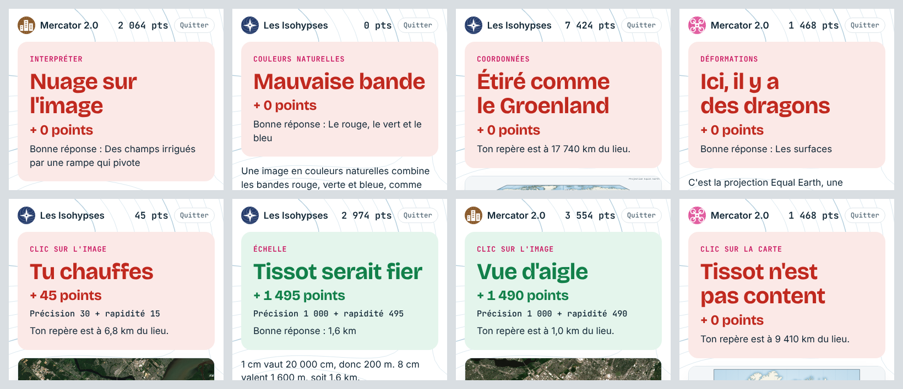

Quiz 4
Lire une carte topo
Courbes de niveau tracées à partir de vraies élévations : mont Saint-Hilaire, fjord du Saguenay, cratère des Pingualuit, mont Albert, Fuji, Grand Canyon.
Un quiz projeté au tableau, joué en équipe sur le téléphone. De vraies cartes, de vraies images satellitaires, de vraies données. Aucun compte à créer.
Les équipes entrent le code de quatre lettres affiché au tableau, ou balaient le code QR.


Il choisit un des sept quiz sur l'écran du prof et projette le code de la partie.
Chaque équipe entre le code et un surnom sur son téléphone. Pas de compte, pas d'application à installer.
Après chaque question, l'écran montre la bonne réponse, une courte explication et la source des données.
Choix multiples, clic sur la carte, réponses chiffrées et climatogrammes mystères.

Courbes de niveau tracées à partir de vraies élévations : mont Saint-Hilaire, fjord du Saguenay, cratère des Pingualuit, mont Albert, Fuji, Grand Canyon.
Sentinel-2 en couleurs naturelles et en fausses couleurs : Trois-Rivières, Montréal-Trudeau, Jasper après le feu, champs à pivot, glacier d'Aletsch.

Mercator, Equal Earth, azimutale, orthographique, indicatrices de Tissot et fuseaux UTM.

Variables visuelles, palettes et cartes ratées, sur les pays d'Amérique du Sud.

Climatogrammes, pyramides des âges du Niger, du Japon, du Canada et du Qatar, et graphiques trompeurs.

Satellites, précision, degrés décimaux, WGS 84 et un point à placer à partir de ses coordonnées.

Lieux, coordonnées, échelle et climatogrammes. Le prof choisit le quiz avant de créer la partie.
Chaque quiz est un simple tableau de questions dans le code. Le mode d'emploi du dépôt explique comment en écrire de nouvelles.

Fonds de carte du monde, en vraies projections d3-geo, avec le nom de la projection affiché.
Modèle d'élévation mondial (Mapzen, données ouvertes sur AWS) pour les courbes de niveau.
Images L2A à 10 m, lues directement dans les fichiers publics sur AWS.
Pyramides des âges (World Population Prospects), population et densité.